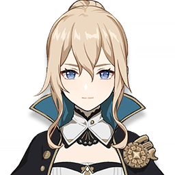
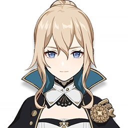

Es un bardo misterioso al que le gusta recitar tanto viejos poemas
como nuevas canciones de moda. De espíritu libre y amante del vino, es
el actual recipiente mortal de Barbatos, el Arconte Anemo.
Talentos
Ataque Normal: Realiza hasta 6 disparos
consecutivos con arco. Ataque Cargado: Dispara
un Tiro preciso que inflige mayor daño. Al apuntar, se
acumularán vientos favorables en la punta de flecha. Una flecha
con fuerza del viento totalmente cargada infligirá Daño Anemo.
Ataque Descendente: Dispara una lluvia de
flechas desde el aire y desciende rápidamente, causando daño a
distancia al impactar en el suelo.
¡Oh viento sobre el que vuelan todos los himnos y cantos, lleva
a estos caminantes de la tierra hacia los cielos!
Pulsar una vez Invoca un campo de viento en la
ubicación del enemigo, infligiendo Daño Anemo de Área y lanzando
a los enemigos por el aire.
Mantener pulsado Invoca un campo de viento aún
más grande con Venti como epicentro, infligiendo Daño Anemo de
Área y lanzando a los enemigos afectados al aire. Después de
soltar esta habilidad, Venti cabalga el viento en el aire.
Dispara una flecha hecha de innumerables vientos fusionados,
creando un enorme Ojo de la Tormenta que absorbe objetos y
enemigos a su paso e inflige Daño Anemo. Cambio elemental Si el
Ojo de la tormenta entra en contacto con
Hydro/Pyro/Cryo/Electro, inflige Daño elemental adicional de ese
tipo. El cambio elemental solo puede ocurrir una vez por uso.
Mantener pulsado la Sonata celestial genera
corrientes de viento ascendentes con una duración de 20 s.
Después de que termine el efecto de Gran Oda del Viento, Venti
restaurará 15 puntos de Energía Elemental. Si ocurre un cambio
elemental, también restaurará 15 pts. de Energía Elemental a
todos los personajes con los elementos correspondientes.
Disminuye el consumo de Aguante al planear en un 20%.
Constelaciones
Dispara 2 flechas adicionales por cada Tiro preciso, infligiendo
cada uno 33% del Daño de la flecha original.
Sonata celestial reduce la RES Anemo del enemigo en un 12%
durante 10 s. Los enemigos lanzados al aire por Sonata celestial
sufren una reducción adicional del 12% de RES Anemo y de RES
física.
Aumenta el nivel de habilidad de
Gran Oda del Viento +3. Puede ser aumentado
hasta Niv. 15.
Venti obtiene un 25% de Bono de Daño Anemo durante 10 s tras
recoger un Orbe Elemental o una Partícula Elemental.
Aumenta el nivel de habilidad de
Sonata celestial +3. Puede ser aumentado hasta
Niv. 15.
Gran Oda del Viento reduce la RES Anemo del enemigo en un 20%.
Si ocurriera un cambio elemental durante Gran Oda del Viento, la
RES Elemental del nuevo atributo se reducirá un 20%.
 
